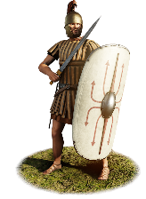
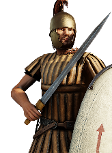
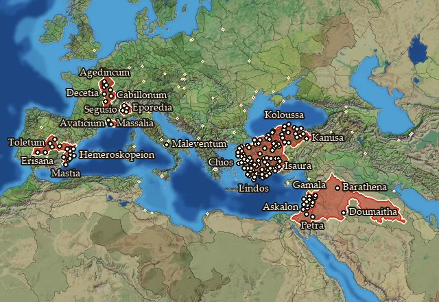

Legio VI Ferrata


Class: heavy · Category: infantry · Men per unit: 40
Reforms: Unlocked by Named Legions are now available
Stats
| Rank in roster | ||
|---|---|---|
| Men per unit | 40 | ███······· 30% |
| Attack | 14 | ███████··· 67% |
| Charge bonus | 14 | █████····· 51% |
| Defence | 39 | ███████··· 70% |
| · armour | 12 | ███████··· 70% |
| · defence skill | 21 | █████····· 54% |
| · shield | 6 | █████████· 89% |
| Morale | 13 | ███████··· 70% |
| Discipline | Normal | |
| Training | Highly trained | |
| Recruitment cost | 1,660 dn | ███······· 28% |
| Upkeep per turn | 610 dn | ████······ 43% |
| Turns to recruit | 3 |
Weapons
| Primary | Secondary | Primary | Secondary | Primary | Secondary | Primary | Secondary | ||||
|---|---|---|---|---|---|---|---|---|---|---|---|
| Attack | 14 | 13 | Type | thrown · blade | melee · blade | Projectile | pilum_early | — | Ammunition | 2 | — |
| Charge bonus | 14 | 14 | Damage | piercing | piercing | Range | 40 | — | Properties | Armour-piercing (counts only half the target's armour) · used just before charging into combat | — |
Defence
| Primary | Secondary | Primary | Secondary | Primary | Secondary | Primary | Secondary | ||||
|---|---|---|---|---|---|---|---|---|---|---|---|
| Total | 39 | — | Armour | 12 | — | Defence skill | 21 | — | Shield | 6 | — |
Condition and terrain
| Hit points | 1 | Ground: scrub / sand / forest / snow | 0 / -1 / 0 / -1 | Charge distance | 30 | Formations | Square · Testudo |
Technical stats
| Time between blows (primary / secondary) | 2.5 s / 2.5 s | Collision mass per man (1.0 is normal) | 1.27 | Spacing between men: close / loose | 1 × 1.2 m / 2 × 2.4 m | Default ranks | 5 |
| Extra fatigue in hot climates | 3 |
In battle: Can sap · Very good stamina
Who can recruit it
No faction has this on its core roster: it can be raised only in the provinces below.
A further 4 factions can raise it in the provinces below.
Exactly what a settlement must have, route by route (2)
| Building | Also requires | Building | Also requires | ||||
|---|---|---|---|---|---|---|---|
| Direct Rule | Tier 3 Military Industrial Complex · Tier 2 Colony · Legio vi ferrata early · Named Legions are now available | Homeland | Tier 2 Military Industrial Complex · Legio vi ferrata early · Named Legions are now available |
Areas of recruitment

Legio vi ferrata early: 150 provinces
Abilene · Adramyttenos Kolpos · Aeduia · Aeduia Occidentalis · Agraia-Agoubenia · Aizanitis · Amastris · Anatolike Phrygia · Anatolike Tolistobogia · Ano Troias · Arinna · Arktonnesos · Ashdud · Ashqalon · Auranitis · Avaticia · Bithynia · Boreia Palaistine · Boreia Paphlagonia · Brannovicia · Carpetania · Carpetania Meridionalis · Carpetania Septentrionalis · Chalkedonia · Charonia · Chios · Chrysorrhoas · Contestania · Contestania Meridionalis · Contestania Occidentalis · Contestania Orientalis · Dorian Chersonesos · Dorylaia · Edetania · Edetania Meridionalis · Edetania Occidentalis · Estwediys · Etennia-Kotennia · Euantheia · Eurymedoneia · Gadaris · Gadilonitis · Gaulanitis · Gazaia · Halikarnassia · Hellenike Mariandynia · Hesperos Arabia · Hesperos Pamphylia · Hesperos Pisidia · Hieratikos Pontos · Homonadia-Oroandia · Hypios · Idoumaia · Idrias · Ionia · Ioudaia · Isauria · Kaikia · Kalbia · Kamisene · Kappadoxia · Karia · Katakekaumene Lykaonia · Kaukonia · Kaystros · Kianos Kolpos · Kibyratis · Kimiatene · Klazomenia · Korbeous · Kos · Latmikos Kolpos · Lelegia · Lesbos · Lydia · Lykaonia · Lykia · Madabitis · Maiandros · Mandubia-Blannovia · Marsyas · Massalike Kontestania · Mastienia · Megale Phrygia · Methymnia · Milyas · Mimas · Mlaundos · Mykale · Myros · Mysia · Nea Ionia · Nea Tektosagia · Notia Bithynia · Notios Rhodos · Olcadia · Orgasia · Pamphylia · Paphlagonia · Paralia · Paralia Paphlagonia · Paroreia Phrygia · Paroreia Pisidia · Pelopeia · Peraia · Pessinountis · Petnelissos · Phanaroia · Phaselia · Phrykonis · Pimolisene · Pisidia · Pityoussa · Pontos · Propontis · Rabat Xaman · Raqemo · Rhaabenia-Masania · Rhodos · Saguntia · Salassia · Salassia Meridionalis · Salluvia · Salone · Samnium · Samos · Saramene · Segobrigia · Segusiavia-Ambivaretia · Segusinia · Senonia · Senonia Orientalis · Senonia Septentrionalis · Shamerayin · Sinopeia · Sipylos · Synnadia · Taurinia · Tektosagia · Telmessis · Themiskyra Pedion · Tlawa · Tolistobogia · Trachonitis · Troias · Trokmia · Tsenmure · Turdulia · Turdulia Orientalis · Zelitis